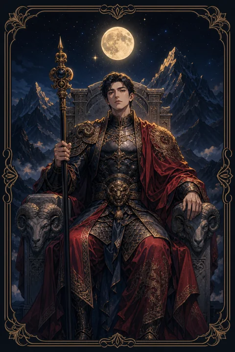

IV 황제 카드 — 질서와 책임으로 세운 기반
황제 카드 한눈에 보기
황제 카드 상징 읽기

동네보살의 카드 그림은 전통 라이더–웨이트 덱의 뜻을 새 그림으로 옮긴 것입니다. 아래 상징 설명은 전통 덱의 그림을 기준으로 합니다.
황제는 네 모서리에 숫양 머리가 새겨진 돌 왕좌에 곧게 앉아 있습니다. 숫양은 강한 추진력과 개척 정신을 뜻하며, 단단한 돌은 쉽게 흔들리지 않는 기반을 말합니다.
뒤로 펼쳐진 황량한 바위산은 편안함보다 엄격함과 절제를 선택한 자리를 보여 줍니다. 풀 한 포기 없는 땅에서도 질서를 세워 지켜 내는 힘입니다.
오른손에 든 앙크 모양 홀은 생명과 통치권을, 왼손의 둥근 구슬은 자신이 책임져야 할 세계를 상징합니다. 붉은 옷 아래로 드러난 갑옷은 언제든 지킬 준비가 되어 있다는 뜻이고, 길게 기른 흰 수염은 오랜 경험에서 나온 판단력을 나타냅니다.
왕좌 뒤편 바위산 아래로 가느다란 강물이 흐르는데, 이는 엄격한 겉모습 안에도 감정과 생명이 조용히 흐르고 있음을 알려 줍니다. 머리에 쓴 금관은 스스로 쌓아 올린 지위와 그에 따르는 무게입니다. 온통 붉은빛으로 칠해진 배경은 행동력과 강한 의지를 드러냅니다.
황제 카드 정방향 뜻
정방향 황제는 흔들리는 상황에 기둥을 세울 때라는 메시지를 전합니다. 감정에 따라 오락가락하기보다 기준과 순서를 정하고 그대로 지켜 나가면 성과가 차곡차곡 쌓입니다.
이 카드는 책임을 피하지 않는 사람에게 힘을 실어 줍니다. 결정권을 쥐고 방향을 제시해야 하는 자리에 서 있다면 주저하지 말고 중심을 잡으세요. 주변 사람들은 그 단단함에서 안정감을 얻습니다.
생활 면에서도 규칙적인 일과, 정리된 공간, 명확한 예산처럼 구조를 만드는 일이 도움이 됩니다. 자유로움은 줄어드는 것처럼 느껴질 수 있지만, 튼튼한 틀이 있어야 그 안에서 마음 놓고 움직일 수 있습니다. 약속을 지키는 작은 습관이 신뢰라는 큰 성을 쌓습니다. 아버지나 윗사람처럼 든든한 보호자가 곁에 나타나거나, 당신이 그런 역할을 맡게 될 수도 있습니다. 필요한 순간에 분명하게 거절하고 선을 긋는 용기도 이 카드가 주는 힘입니다.
황제 카드 역방향 뜻
역방향 황제는 지켜야 할 질서가 어느새 남을 누르는 힘으로 변한 모습입니다. 내 방식만 옳다고 여기거나 모든 일을 직접 통제하려 들면 주변 사람들은 입을 닫고 거리를 둡니다.
반대로 책임을 져야 할 순간에 결정을 피하고 기준 없이 흔들리는 상태를 가리키기도 합니다. 권위 있는 사람과 부딪히거나 지나치게 엄격한 윗사람 때문에 답답함을 느낄 수도 있습니다.
이 카드가 힘을 내려놓으라고만 말하는 것은 아닙니다. 원칙은 지키되 그 원칙이 왜 필요한지 설명하고 상대의 의견을 들을 여지를 남겨 두라는 뜻입니다. 쥔 손을 조금 풀면 오히려 사람들이 스스로 따라오고, 무너졌던 기반도 다시 단단해집니다. 지나친 책임감으로 모든 짐을 혼자 짊어지고 있다면 그 역시 역방향 황제의 모습일 수 있습니다. 일을 나누고 도움을 청하는 것은 약함이 아니라 더 큰 성을 지키는 지혜입니다.
연애에서 황제 카드
솔로라면 믿음직하고 책임감 있는 사람에게 끌리거나, 당신의 안정된 모습에 누군가 호감을 느끼는 시기입니다. 가벼운 설렘보다 오래 갈 수 있는 관계를 원하는 마음이 커서 만남에 신중해질 수 있습니다.
연애 중이라면 관계에 틀과 약속을 세우고 싶은 마음이 강해집니다. 연락 방식, 만남 횟수, 돈 관리처럼 함께 정할 규칙이 생기면 서로 편안해집니다. 다만 한 사람이 일방적으로 정하고 다른 사람이 따르는 구조가 되면 숨이 막히는 관계로 바뀔 수 있습니다. 보호와 통제는 한 끗 차이라는 점을 기억하고, 결정은 함께 내리는 습관을 들여 보세요. 솔로라면 상대에게 바라는 조건 목록이 지나치게 길어 인연을 스스로 막고 있지 않은지 살펴볼 필요도 있습니다. 연애 중인 경우 경제적 계획이나 미래의 거처처럼 현실적인 주제를 차분히 이야기하면 관계에 믿음이 더해지고, 상대는 당신에게서 기댈 곳을 발견합니다.
재회·속마음 질문에서 황제 카드
재회 질문에서 황제가 나오면 상대는 감정보다 현실적인 판단을 앞세우고 있을 가능성이 큽니다. 다시 만날지 여부를 조건과 책임의 문제로 따져 보는 중이라, 애틋한 호소보다는 달라진 태도와 구체적인 계획이 마음을 움직입니다. 예전 갈등이 통제나 고집에서 비롯됐다면 그 부분을 어떻게 바꿀지 분명히 보여 주는 것이 먼저입니다. 상대가 다시 연락해 온다면 감정이 넘쳐서라기보다 스스로 충분히 따져 본 뒤에 내린 결정일 가능성이 높습니다. 그만큼 한번 마음을 정하면 쉽게 흔들리지 않는 편이니, 약속한 것은 작은 것이라도 빠짐없이 지켜 신뢰를 쌓는 모습이 중요합니다.
일·금전에서 황제 카드
일에서는 체계와 직위가 힘이 되는 시기입니다. 규정대로 처리한 일이 신뢰로 돌아오고, 팀을 이끌거나 관리자로 올라설 기회가 생길 수 있습니다. 흩어진 업무를 정리하고 역할과 마감을 분명히 나누면 성과가 눈에 띄게 좋아집니다.
금전 면에서는 감에 맡기기보다 예산과 계획표를 세워 관리하는 태도가 안정감을 줍니다. 수입과 지출의 구조를 한눈에 볼 수 있게 정리해 두면 불필요한 새어 나감을 막을 수 있습니다. 다만 너무 보수적으로만 움직이면 필요한 기회까지 놓칠 수 있으니 원칙 안에서 유연함을 조금 남겨 두세요. 계약이나 조직 개편처럼 공식적인 절차가 걸린 일이라면 서류와 기준을 명확히 챙기는 사람이 주도권을 쥡니다. 윗사람과 의견이 다르다면 감정보다 근거를 앞세워 설득하는 방식이 통합니다.
황제 카드는 예일까 아니오일까
원칙을 세우고 책임지는 쪽에 힘이 실리는 카드라 계획이 분명한 질문에는 긍정으로 봅니다. 역방향이라면 고집이나 통제욕이 일을 막고 있다는 뜻이어서, 태도를 누그러뜨려야 좋은 결과가 나오는 조건부로 바뀝니다.
자주 묻는 질문
황제 카드 역방향은 나쁜 뜻인가요?
역방향 황제는 지켜야 할 질서가 어느새 남을 누르는 힘으로 변한 모습입니다. 내 방식만 옳다고 여기거나 모든 일을 직접 통제하려 들면 주변 사람들은 입을 닫고 거리를 둡니다.
황제 카드가 연애 질문에 나오면요?
솔로라면 믿음직하고 책임감 있는 사람에게 끌리거나, 당신의 안정된 모습에 누군가 호감을 느끼는 시기입니다. 가벼운 설렘보다 오래 갈 수 있는 관계를 원하는 마음이 커서 만남에 신중해질 수 있습니다.
타로 카드는 어떻게 뽑나요?
타로 카드 페이지에서 카드를 섞으면 메이저 아르카나 22장이 펼쳐집니다. 마음이 가는 세 장을 고르면 과거·현재·미래 자리에 놓이고, 한 장씩 뒤집어 자리와 방향에 맞는 풀이를 읽습니다. 정방향과 역방향은 섞는 순간 정해집니다.